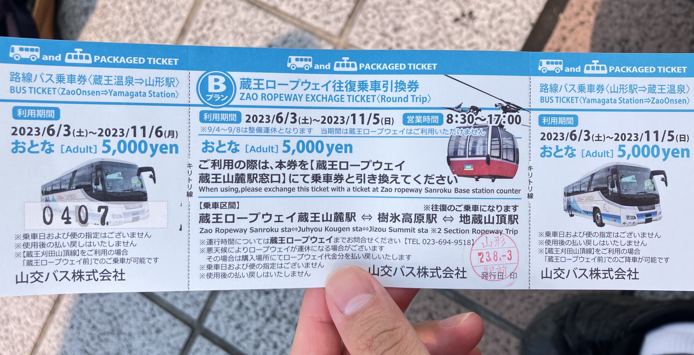
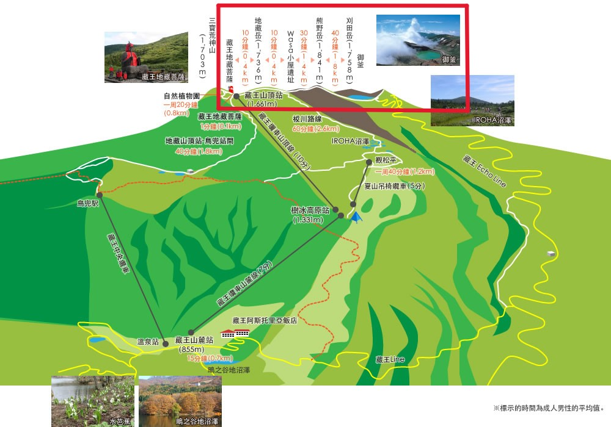
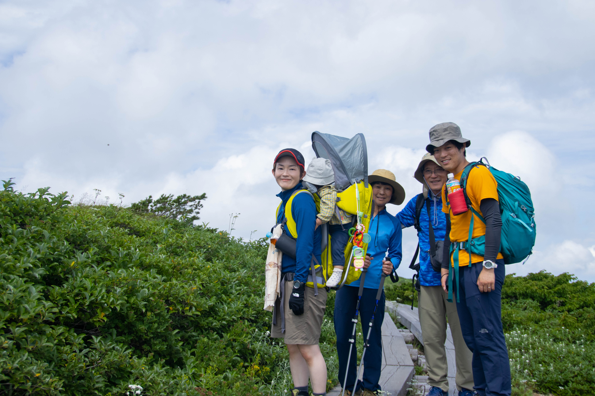
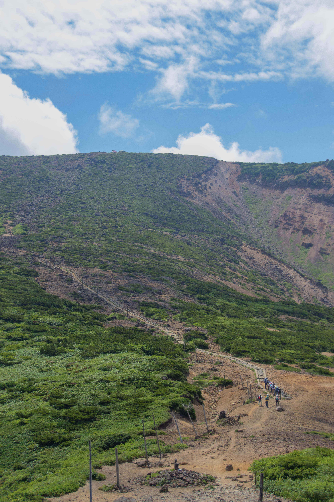
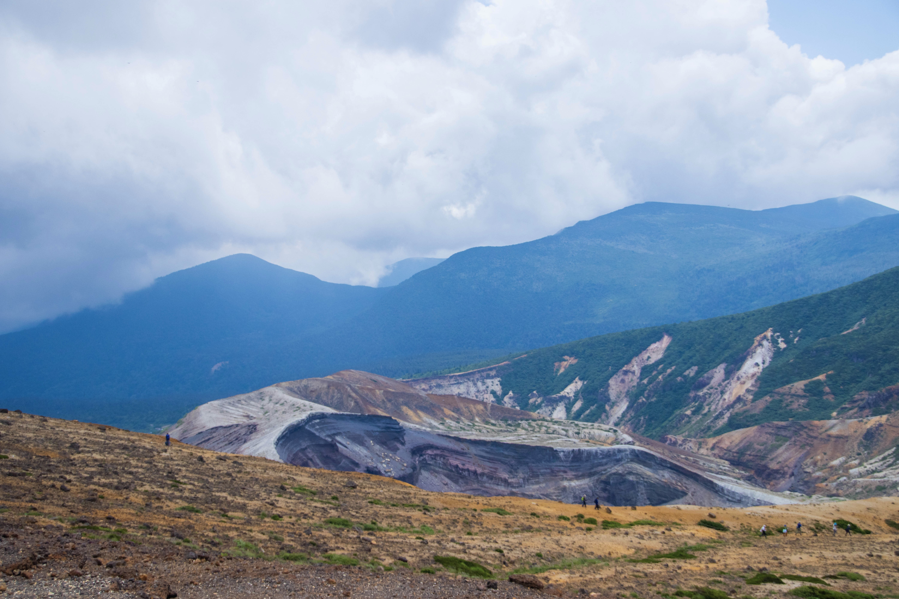
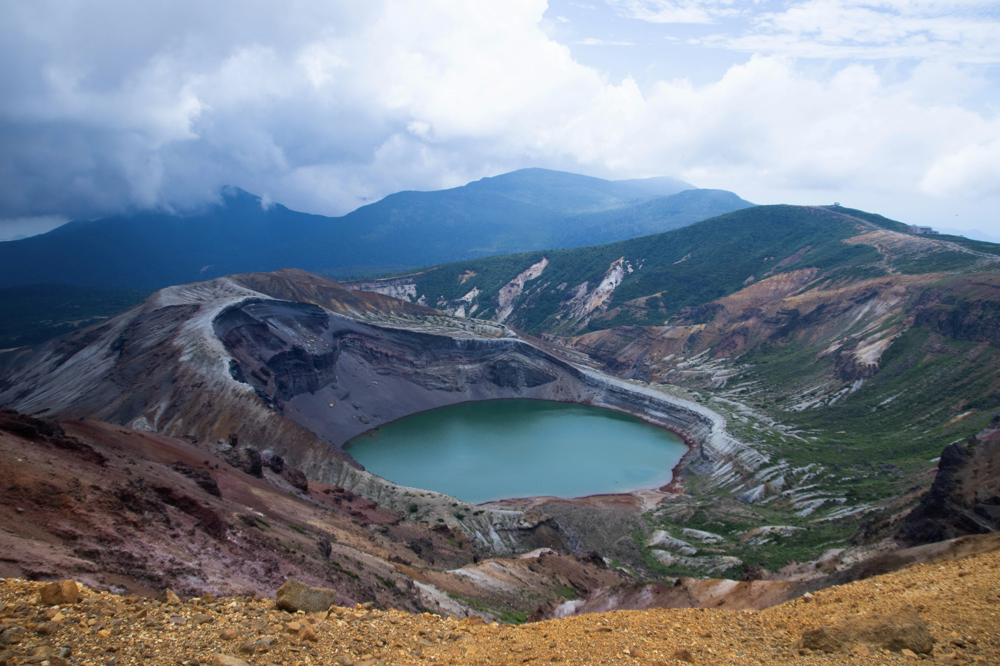
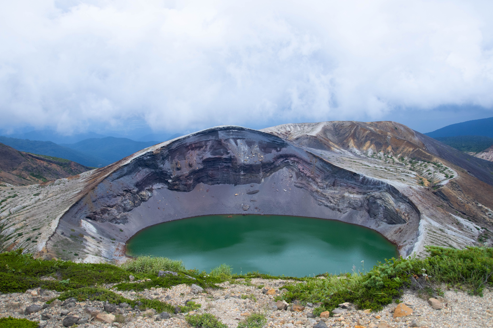
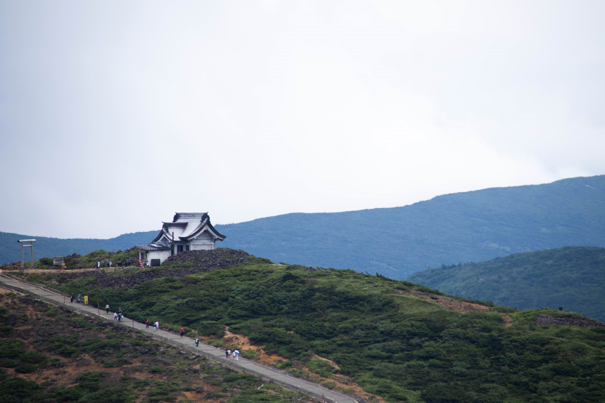
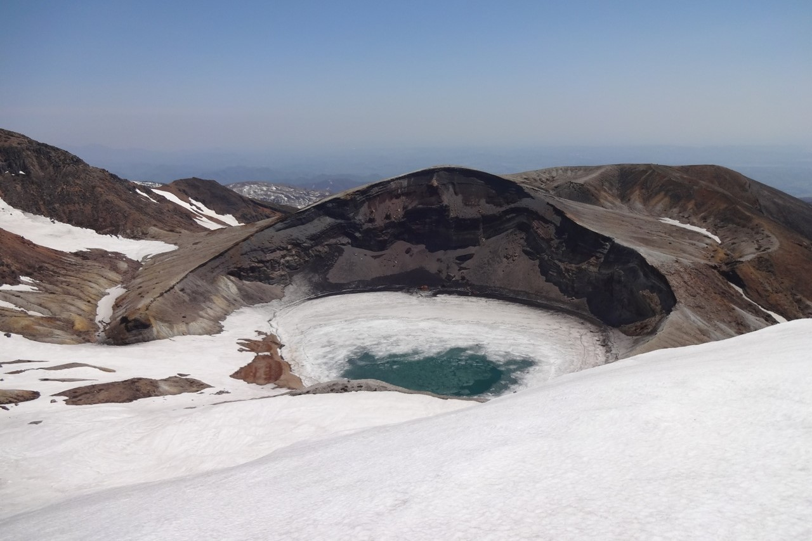

御釜
藏王連峰位於宮城縣、山形縣的交接處,是日本的百名山之一。御釜的日文直譯是「鍋子」,是藏王山脈上的火山口湖,被刈田岳、熊野岳、五色岳三大山峰所包圍,湖水大致呈翡翠色。(陳綺貞〈殘缺的彩虹〉有到這裡取景!)
👉御釜當日狀況
(點擊live可以觀看即時影像,冬天可以透過這個欣賞雪景!)
交通方式
從山形或仙台出發,可以選擇自駕或搭巴士直接前往「蔵王刈田岳山頂停車場」,步行幾分鐘就可以看到御釜了。(JR TIMES) 由於這次想要運動,所以沒有直接抵達山頂的停車場,而是按照以下方式先前往「地藏山頂站」,再健行前往御釜。
| 起訖 | 交通方式 | 費用 | 時間 |
|---|---|---|---|
| 仙台車站 → 山形車站 | 巴士 | 1000日元 | 約一小時 |
| 山形車站 → 藏王溫泉站 | 巴士 | 來回套票5000日元(巴士+纜車) | 約40分鐘 |
| 藏王溫泉 → 藏王山麓站 | 走路 | 約10分鐘 | |
| 藏王山麓站 → 地藏山頂站 | 藏王纜車 | 來回套票5000日元(巴士+纜車) | 約20分鐘 |
纜車開放時間:4月底-11月初

健行紀錄
從地藏山頂站出來後,依照官網的路線圖(藏王ロープウェイ)走50分鐘,翻過熊野岳後就可以看到御釜了;從熊野岳走到刈田岳大概要40分鐘,沿線可以看到不同角度的御釜。(這次走起來還蠻輕鬆的,之後如果還有機會,想嘗試看看從樹冰高原開始往上爬)







Google Earth
回來台灣後,用Google Earth Studio回顧自己走過的路
(藏王山頂站 → 御釜 → 刈田嶺神社)
其他
看到日本登山客拍的照片(貧乏性の初心者登山),真的很想看看御釜被雪覆蓋的模樣!
